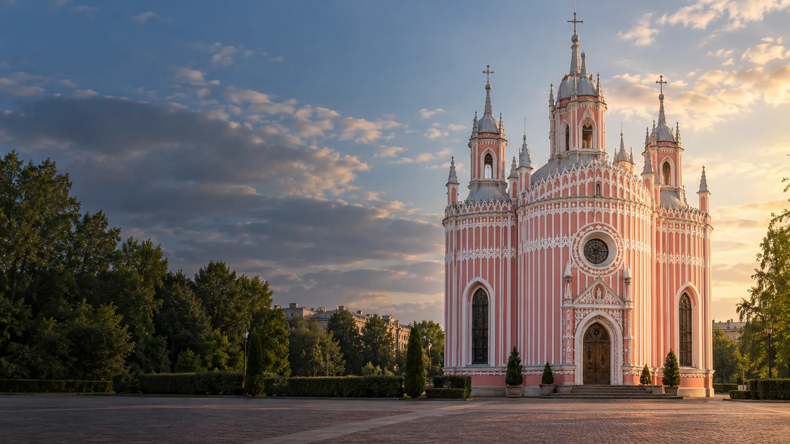

ПМК Аврора
Варшавская ул., д. 47, корп. 2
Смотреть клуб
Молодёжные площадки района
Клубы МПЦ «Московский» и пространства Дома молодёжи «Пулковец».
Смотреть площадкиКаталог района
Ищи по названию, адресу или направлению.
Показано 21 площадка
Загружаем карту клубов…
Предварительные координаты: © OpenStreetMap contributors.
Варшавская ул., д. 47, корп. 2
Смотреть клубул. Пилотов, д. 25
Смотреть клубул. Орджоникидзе, д. 61
Смотреть клубКубинская ул., д. 44
Смотреть клубЗвёздная ул., д. 16А
Смотреть площадкуБлагодатная ул., д. 38
Смотреть клубпр. Космонавтов, д. 29, корп. 7
Смотреть клубМосковский пр., д. 174А
Смотреть клубМосковский пр., д. 216А
Смотреть клубул. Ленсовета, д. 10
Смотреть клубАвиационная ул., д. 9
Смотреть клубСмоленская ул., д. 1
Смотреть клубПулковская ул., д. 11, корп. 1
Смотреть клубЛенинский пр., д. 158, корп. 2
Смотреть клубВитебский пр., д. 41, корп. 1
Смотреть клубБлагодатная ул., д. 51
Смотреть клубМосковский пр., д. 153
Смотреть клубМосковское ш., д. 14, корп. 1
Смотреть клуб5-й Предпортовый пр., д. 8, корп. 5
Смотреть площадкуМосковский пр., д. 151А
Смотреть площадкуКраснопутиловская ул., д. 56А
Смотреть площадкуПодходящих площадок не найдено. Попробуй другой запрос.
Связаться с учреждением
Контакты учреждения
Алтайская ул., д. 37
Контакты учреждения
5-й Предпортовый пр., д. 8, корп. 5
Перед посещением
Для участников от 14 до 35 лет.
Проверь дни, время и наличие мест.
Узнай, как присоединиться.
Состав клубов МПЦ сверен по списку администрации района. Бесплатные направления: городской документ МПЦ; площадки «Пулковца»: документ Дома молодёжи. PDF загружены 01.06.2026. Адреса клубов МПЦ взяты из районной публикации 2019 года и нуждаются в подтверждении. «Атлант» отмечен в PDF как ремонтируемый, а «Искорка» не имеет действующих направлений; они не включены в список доступных площадок.